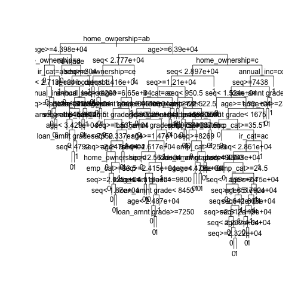
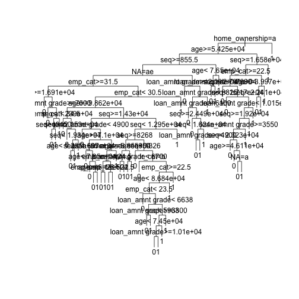
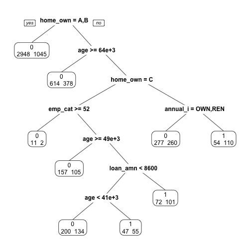
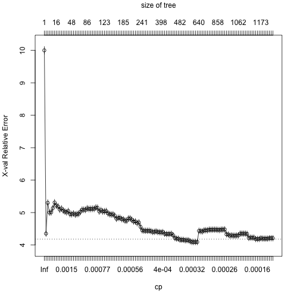

xwMOOC 기계학습
신용평점모형 - 로지스틱 회귀모형과 의사결정나무
학습목표
- 신용평점모형을 위해 사용되는 로지스틱 회귀모형과 의사결정나무를 이해한다.
- 렌딩클럽 대출 데이터에 로지스틱 회귀모형을 적합시키고 계수 및 모형성능에 대해 살펴본다.
1. 로지스틱 회귀 1 2
앞선 탐색적 데이터 분석과정과 피쳐 공학 등을 통해 모형적합을 시킬 준비는 사전에 맞춰졌다고 가정한다. 따라서, 종속변수 채무 불이행에 대한 정의가 완료되었고, 기계학습 모형론을 적합시킬 준비 즉, 훈련데이터와 테스트 데이터 구분도 마무리했다. 이제 로지스틱 회귀분석을 실행하여 모형적합결과를 해석하는 과정을 거쳐본다.
##=====================================================================
## 01. 렌딩클럽 데이터 가져오기
##=====================================================================
suppressMessages(library(readr))
suppressMessages(library(dplyr))
setwd("~")
loan.dat <- read_csv("lending-club-loan-data/loan.csv", col_names = TRUE)Parsed with column specification:
cols(
.default = col_character(),
id = col_integer(),
member_id = col_integer(),
loan_amnt = col_double(),
funded_amnt = col_double(),
funded_amnt_inv = col_double(),
int_rate = col_double(),
installment = col_double(),
annual_inc = col_double(),
dti = col_double(),
delinq_2yrs = col_double(),
inq_last_6mths = col_double(),
mths_since_last_delinq = col_double(),
mths_since_last_record = col_double(),
open_acc = col_double(),
pub_rec = col_double(),
revol_bal = col_double(),
revol_util = col_double(),
total_acc = col_double(),
out_prncp = col_double(),
out_prncp_inv = col_double()
# ... with 11 more columns
)
See spec(...) for full column specifications.
##=====================================================================
## 02. 렌딩클럽 데이터 변환
##=====================================================================
library(gmodels)
# 종속변수 설정
bad_indicators <- c("Charged Off",
"Default",
"Does not meet the credit policy. Status:Charged Off",
"In Grace Period",
"Default Receiver",
"Late (16-30 days)",
"Late (31-120 days)")
loan.dat$loan_status_yn <- ifelse(loan.dat$loan_status %in% bad_indicators, 1, 0)
##=====================================================================
## 03. 렌딩클럽 데이터 기계학습
##=====================================================================
# 0. 훈련과 테스트 데이터셋 분리
index_train <- sample(1:nrow(loan.dat), 2/3*nrow(loan.dat))
training_set <- loan.dat[index_train, ]
test_set <- loan.dat[-index_train,]
#---------------------------------------------------------------------
# 01. 이항 로지스틱 회귀 모형
#---------------------------------------------------------------------
logit_mod <- glm(loan_status_yn ~ int_rate, family="binomial", data=training_set)
summary(logit_mod)
Call:
glm(formula = loan_status_yn ~ int_rate, family = "binomial",
data = training_set)
Deviance Residuals:
Min 1Q Median 3Q Max
-1.0051 -0.4306 -0.3449 -0.2661 2.7656
Coefficients:
Estimate Std. Error z value Pr(>|z|)
(Intercept) -4.562522 0.017671 -258.2 <2e-16 ***
int_rate 0.142903 0.001086 131.6 <2e-16 ***
---
Signif. codes: 0 '***' 0.001 '**' 0.01 '*' 0.05 '.' 0.1 ' ' 1
(Dispersion parameter for binomial family taken to be 1)
Null deviance: 317890 on 591585 degrees of freedom
Residual deviance: 300408 on 591584 degrees of freedom
AIC: 300412
Number of Fisher Scoring iterations: 5
이항 로지스틱 회귀분석은 종속변수가 0과 1, 즉 정상(0) 혹은 채무불이행(1)이 되고 이를 다수의 설명변수 혹은 예측변수로 적합시키는 모형이다.
\[P(\text{loan_status_yn} = 1 | x_1 , x_2 , \cdots , x_m ) = \frac{1}{1+e^{-(\beta_0 + \beta_1 x_1 + \cdots + \beta_m x_m)}}\]
회귀분석의 결과는 확률값로 표현되고, \(x_1 , x_2 , \cdots , x_m\)은 설명변수, 즉 데이터가 되고, \(\beta_0 , \beta_1 , \cdots , \beta_m\)은 추정해야 되는 회귀 계수가 되고 이를 결합한 \(\beta_0 + \beta_1 x_1 + \cdots + \beta_m x_m\)은 선형 예측변수가 된다.
1.1. 로지스틱 회귀 적합과 예측
로지스틱 회귀분석에 데이터를 넣어 적합시킬 경우 glm 함수를 사용하고 family=binomial을 인자로 넣고 종속변수와 설명변수는 R 모형식에 맞춰 집어넣는다. 그리고 결과를 logit_mod 모형에 저장하면 로지스틱 회귀모형에 대한 모든 정보가 담기게 된다.
summary(logit_mod) 명령어로 이자율로 채무 불이행을 예측한 모형을 살펴본다. \(\beta_0\) (Intercept) 절편은 -4.498306, \(\beta_1\) int_rate 이자율은 0.139891 으로 추정되고 이를 수식으로 표현하면 다음과 같다.
\[P(\text{loan_status_yn} = 1 | \text{이자율(int_rate)} ) = \frac{1}{1+e^{-(-4.498306+0.139891 \times \text{이자율(int_rate)} )}}\]
로지스틱 모형이 완성되어 이자율에 따른 채무 불이행 확률을 계산해본다.
check.obs <- as.data.frame(training_set[1,]) # 이자율 19.99
predict(logit_mod, check.obs) 1
-2.657621
predict(logit_mod, check.obs, type="response") 1
0.06552087
summary(logit_mod)
Call:
glm(formula = loan_status_yn ~ int_rate, family = "binomial",
data = training_set)
Deviance Residuals:
Min 1Q Median 3Q Max
-1.0051 -0.4306 -0.3449 -0.2661 2.7656
Coefficients:
Estimate Std. Error z value Pr(>|z|)
(Intercept) -4.562522 0.017671 -258.2 <2e-16 ***
int_rate 0.142903 0.001086 131.6 <2e-16 ***
---
Signif. codes: 0 '***' 0.001 '**' 0.01 '*' 0.05 '.' 0.1 ' ' 1
(Dispersion parameter for binomial family taken to be 1)
Null deviance: 317890 on 591585 degrees of freedom
Residual deviance: 300408 on 591584 degrees of freedom
AIC: 300412
Number of Fisher Scoring iterations: 5
1/(1+exp(-(-4.498306+0.139891*19.99)))[1] 0.1542192
이자율을 설명변수로 넣어 채무불이행을 예측하는데 predict 함수를 사용한다. 먼저 예측에 사용될 데이터를 준비한다. check.obs로 training_set에서 첫번째 관측점을 뽑아낸다. 그리고 나서 predict(logit_mod, check.obs) 명령어를 실행시키면 -1.701879 값이 나온다. 이는 선형 예측변수 값과 일치(소수점 아래 4자리 까지)한다.
$_0 + _1 \text{이자율(int_rate) = -4.498306+0.139891*19.99 = -1.701885 $
원하는 확률을 계산하기 위해서는 predict(logit_mod, check.obs, type="response") 처럼 type="response" 인자를 전달하면 확률값이 계산된다.
R로 계산된 이자율 19.99에 대한 채무 불이행 확률은 0.15422으로 확인된다. 수식으로 확인하면 거의 동일한 결과를 얻게 된다.
\[P(\text{loan_status_yn} = 1 | \text{이자율(int_rate)} ) = \frac{1}{1+e^{-(-4.498306+0.139891 \times \text{이자율(int_rate)} )}} = \frac{1}{1+e^{-(-4.498306+0.139891 \times 19.99 )}} = 0.1542192\]
1.2. \(\beta\) 회귀계수 해석
통계모형이 다른 기계학습 모형 혹은 알고리즘과 비교해서 많이 사랑받는 이유 중의 하나가 설명이 가능하다는 점이다. 즉, \(\beta\)가 갖는 의미를 이해하고 이를 기반으로 설명이 가능하다.
\[P(\text{loan_status_yn} = 1 | x_1 , x_2 , \cdots , x_m ) = \frac{1}{1+e^{-(\beta_0 + \beta_1 x_1 + \cdots + \beta_m x_m)}} = \frac{e^{\beta_0 + \beta_1 x_1 + \cdots + \beta_m x_m}}{1+e^{\beta_0 + \beta_1 x_1 + \cdots + \beta_m x_m}}\]
\[P(\text{loan_status_yn} = 0 | x_1 , x_2 , \cdots , x_m ) = 1- \frac{1}{1+e^{-(\beta_0 + \beta_1 x_1 + \cdots + \beta_m x_m)}} = \frac{1}{1+e^{\beta_0 + \beta_1 x_1 + \cdots + \beta_m x_m}}\]
loan_status_yn 이 0에 대한 1의 비율을 오즈비(Odds Ratio)라고 정의하고, 채무불이행이 없는 것과 비교하여 채무불이행이 얼마나 높은지 혹은 낮은지를 정량화한다.
\[\frac {P(\text{loan_status_yn} = 1 | x_1 , x_2 , \cdots , x_m )} {P(\text{loan_status_yn} = 0 | x_1 , x_2 , \cdots , x_m )} = e^{\beta_0 + \beta_1 x_1 + \cdots + \beta_m x_m}\]
- 만약 \(x_i\) 가 1 단위 증가하게 되면, \(e^{\beta_i}\)을 오즈값에 곱하게 된다.
- \(\beta_i < 0\) 작게 되면, \(e^{\beta_i}<1\) 이 되어, 오즈값은 \(x_i\) 가 증가하면 오즈값은 감소한다.
- \(\beta_i > 0\) 크게 되면, \(e^{\beta_i}>1\) 이 되어, 오즈값은 \(x_i\) 가 증가하면 오즈값은 증가한다.
- 이자율 모형에 적용하면, 다음과 같은 결과가 도출된다.
- 이자율이 1만큼 증가하게 되면 (1% 증가하게 되면), 회귀계수
0.139891을 곱해야 되고 양수이기 때문에 채무불이행은 확률은 높아진다. - 오즈에 \(e^{0.139891}\) 을 곱하게 되면,
1.150148값이 도출되고, 동일한 조건에 정상인과 비교하여 약 15% 높게 채무 불이행 확률이 예측된다.
- 이자율이 1만큼 증가하게 되면 (1% 증가하게 되면), 회귀계수
1.3. 로지스틱 회귀 모형 성능평가
로지스틱 회귀모형에 대한 성능을 평가하기 위해서 채무불이행은 채무불이행으로, 정상고객은 정상고객으로 예측하는가를 갖고 성능을 평가한다. 이를 위해서 예측된 확률값(0에서 1사이)을 정상(0)과 채무불이행(1)으로 구분하는 것이 필요하다. 이를 위해서 도입되는 것이 컷오프(cutoff) 혹은 임계값(threshold value)을 설정하게 된다. 0.5를 임계값으로 설정하여 채무불이행 확률값이 이보다 작으면 채무불이행 위험 없음 0으로 0.5 보다 크면 1 채무불이행으로 각기 설정한다.
하지만, 채무불이행은 흔하지 않은 사건으로 0.5 보다 훨씬 적은 값을 설정하여 채무불이행 여부를 판단하고 이를 기준으로 오차행렬(Confusion Matrix) 을 생성하여 성능을 평가하는 것이 일반적이다.
logit_mod_two_var <- glm(loan_status_yn ~ revol_util + int_rate, family="binomial", data=training_set)
pred_two_var <- predict(logit_mod_two_var, newdata = test_set, type = "response")
pred_cutoff_15 <- ifelse(pred_two_var > 0.15, 1, 0)
table(test_set$loan_status_yn, pred_cutoff_15) pred_cutoff_15
0 1
0 255157 17974
1 18410 4086
data.frame(training_set[1:10, c("loan_status_yn", "revol_util", "int_rate")],
pred_two_var[1:10], pred_cutoff_15[1:10]) loan_status_yn revol_util int_rate pred_two_var.1.10.
1 0 67.90 13.33 0.09823881
2 0 64.00 14.33 0.06338861
3 0 45.90 13.33 0.05998232
4 0 73.70 19.99 0.17161086
5 0 56.00 6.03 0.07064665
6 0 65.30 6.89 0.08620652
7 0 12.42 10.99 0.05133111
8 0 90.30 17.27 0.08822113
9 0 83.30 15.88 0.04400076
10 0 39.20 9.71 0.07428006
pred_cutoff_15.1.10.
1 0
2 0
3 0
4 1
5 0
6 0
7 0
8 0
9 0
10 0
loan_status_yn 채무불이행 종속변수와 revol_util, int_rate 설명변수가 함께 나와 있다. 두 설명변수를 통해 예측한 채무불이행 확률과 컷오프로 15%를 적용한 결과 채무불이행 모형예측 결과가 0과 1로 나타나 있고 실제 채무불이행 데이터와 비교도 가능하다.
cutoff <- 0.15
pred_cutoff_logit <- ifelse(pred_two_var > cutoff, 1, 0)
tab_class_logit <- table(test_set$loan_status_yn, pred_cutoff_15)
sum(diag(tab_class_logit))/nrow(test_set)[1] 0.8764339
2. 의사결정나무

지니 이득 = 뿌리 지니값 - 좌측 잎 비율 * 좌측 지니값 - 우측 잎 비율 * 우측 지니값
= 0.292632 – 446/500 * 0.1814334 – 54/500 * 0.3017833
= 0.09820084 ##=====================================================================
## 01. 렌딩클럽 데이터 가져오기
##=====================================================================
# http://rstudio-pubs-static.s3.amazonaws.com/3588_81e2ebd4de1b41bc9ac2f29f5f7dab2e.html
library(readr)
library(dplyr)
setwd("D:/docs/ml")Error in setwd("D:/docs/ml"): 작업디렉토리를 변경할 수 없습니다
loan.dat <- read_fwf("data/lendingclub_loan_sample.txt", fwf_widths(c(6,11,10,6,15,11,4,8,8)), skip=1)Parsed with column specification:
cols(
X1 = col_integer(),
X2 = col_integer(),
X3 = col_integer(),
X4 = col_character(),
X5 = col_character(),
X6 = col_double(),
X7 = col_integer(),
X8 = col_character(),
X9 = col_character()
)
names(loan.dat) <- c("seq","loan_status", "loan_amnt grade", "home_ownership", "annual_inc", "age", "emp_cat", "ir_cat")
loan.dat$seq <- NULL
dim(loan.dat)[1] 6570 8
names(loan.dat)[1] "loan_status" "loan_amnt grade" "home_ownership" "annual_inc"
[5] "age" "emp_cat" "ir_cat" NA
glimpse(loan.dat)Observations: 6,570
Variables: 8
$ loan_status <int> 1, 1, 1, 1, 1, 1, 1, 1, 1, 1, 1, 1, 1, 1, 1, 1...
$ loan_amnt grade <int> 15000, 6600, 2200, 24250, 2500, 5000, 10000, 1...
$ home_ownership <chr> "E", "D", "A", "D", "C", "B", "C", "B", "C", "...
$ annual_inc <chr> "RENT", "RENT", "MORTGAGE", "RENT", "RENT", "R...
$ age <dbl> 62000.0, 30000.0, 45000.0, 136000.0, 18984.0, ...
$ emp_cat <int> 21, 29, 31, 31, 22, 45, 36, 28, 27, 37, 22, 25...
$ ir_cat <chr> "0-15", "0-15", "0-15", "0-15", "15-30", "0-15...
$ NA <chr> "13.5+", "13.5+", "0-8", "13.5+", "13.5+", "Mi...
summary(loan.dat) loan_status loan_amnt grade home_ownership annual_inc
Min. :0.0000 Min. : 1000 Length:6570 Length:6570
1st Qu.:0.0000 1st Qu.: 5000 Class :character Class :character
Median :0.0000 Median : 8000 Mode :character Mode :character
Mean :0.3333 Mean : 9494
3rd Qu.:1.0000 3rd Qu.:12000
Max. :1.0000 Max. :35000
age emp_cat ir_cat NA
Min. : 4080 Min. :20.00 Length:6570 Length:6570
1st Qu.: 38000 1st Qu.:23.00 Class :character Class :character
Median : 55000 Median :26.00 Mode :character Mode :character
Mean : 64800 Mean :27.62
3rd Qu.: 79150 3rd Qu.:30.00
Max. :900000 Max. :78.00
##=====================================================================
## 02. 의사결정나무
##=====================================================================
library(rpart)
# 02-01. cp값 0.001 설정
loan_dt <- rpart(loan_status ~ ., method = "class", data = loan.dat,
control = rpart.control(cp = 0.001))
plot(loan_dt, uniform = TRUE)
text(loan_dt)
# 02-02.사전 확률 설정
loan_prior_dt <- rpart(loan_status ~ ., method = "class", data = loan.dat,
control = rpart.control(cp = 0.001),
parms = list(prior=c(0.7, 0.3)))
plot(loan_prior_dt, uniform = TRUE)
text(loan_prior_dt)
# 02-03.손실함수 설정
loan_loss_dt <- rpart(loan_status ~ ., method = "class", data = loan.dat,
control = rpart.control(cp = 0.001),
parms = list(loss = matrix(c(0, 10, 1, 0), ncol=2)))
plot(loan_loss_dt, uniform = TRUE)
text(loan_loss_dt)
# 02-04. CP, 사전확률, 손실함수 모두 설정
loan_prior_loss_dt <- rpart(loan_status ~ ., method = "class", data = loan.dat,
control = rpart.control(cp = 0.001),
parms = list(prior=c(0.7, 0.3),
loss = matrix(c(0, 10, 1, 0), ncol=2)))
plot(loan_prior_loss_dt, uniform = TRUE)
text(loan_prior_loss_dt)
#---------------------------------------------------------------------
# 02-1. 의사결정나무: 가지치기(Prune)
#---------------------------------------------------------------------
# 01. 가지치기 사례
plotcp(loan_dt)
printcp(loan_dt)
Classification tree:
rpart(formula = loan_status ~ ., data = loan.dat, method = "class",
control = rpart.control(cp = 0.001))
Variables actually used in tree construction:
[1] age annual_inc emp_cat home_ownership
[5] ir_cat loan_amnt grade NA
Root node error: 2190/6570 = 0.33333
n= 6570
CP nsplit rel error xerror xstd
1 0.0059361 0 1.00000 1.00000 0.017447
2 0.0044140 4 0.97443 1.00183 0.017455
3 0.0036530 7 0.96119 1.00000 0.017447
4 0.0031963 8 0.95753 0.99817 0.017439
5 0.0029680 9 0.95434 0.99817 0.017439
6 0.0025114 11 0.94840 1.00228 0.017457
7 0.0024353 14 0.94018 1.00000 0.017447
8 0.0022831 17 0.93288 1.00000 0.017447
9 0.0016743 18 0.93059 1.00639 0.017475
10 0.0015982 21 0.92557 1.02603 0.017558
11 0.0015221 31 0.90548 1.02694 0.017561
12 0.0014840 34 0.90091 1.02922 0.017571
13 0.0013699 50 0.87671 1.03059 0.017576
14 0.0012177 65 0.85525 1.03836 0.017608
15 0.0011416 68 0.85160 1.03927 0.017611
16 0.0010654 76 0.84247 1.03653 0.017600
17 0.0010000 79 0.83927 1.03699 0.017602
index <- which.min(loan_dt$cptable[ , "xerror"])
tree_min <- loan_dt$cptable[index, "CP"]
ptree_prior <- prune(loan_dt, cp = tree_min)
library(rpart.plot)
prp(ptree_prior, extra=1)
# 02. 손실함수 가지치기 사례
library(rattle)Error in library(rattle): there is no package called 'rattle'
library(rpart.plot)
library(RColorBrewer)
loan_loss_dt <- rpart(loan_status ~ ., method = "class", data = loan.dat,
control = rpart.control(cp = 0.001),
parms = list(prior=c(0.90, 0.10),
loss = matrix(c(0, 10, 1, 0), ncol=2)))
printcp(loan_loss_dt) # 0.0020928
Classification tree:
rpart(formula = loan_status ~ ., data = loan.dat, method = "class",
parms = list(prior = c(0.9, 0.1), loss = matrix(c(0, 10,
1, 0), ncol = 2)), control = rpart.control(cp = 0.001))
Variables actually used in tree construction:
[1] age annual_inc emp_cat home_ownership
[5] ir_cat loan_amnt grade NA
Root node error: 5913/6570 = 0.9
n= 6570
CP nsplit rel error xerror xstd
1 0.1428716 0 1.00000 10.0000 0.087237
2 0.0351598 1 0.85713 3.6778 0.078908
3 0.0033105 2 0.82197 5.2522 0.087887
4 0.0032851 5 0.81142 4.8524 0.086119
5 0.0030695 10 0.79396 5.1006 0.087256
6 0.0029427 12 0.78782 4.9962 0.086800
7 0.0022958 13 0.78488 4.9913 0.086783
8 0.0020928 15 0.78029 5.0796 0.087174
9 0.0020294 17 0.77610 5.2152 0.087747
10 0.0018011 29 0.74800 5.1746 0.087578
11 0.0017123 30 0.74619 5.0848 0.087188
12 0.0015855 33 0.74099 5.0601 0.087078
13 0.0014460 35 0.73782 4.9928 0.086771
14 0.0013952 37 0.73493 4.8795 0.086249
15 0.0012684 41 0.72872 4.8815 0.086261
16 0.0012007 42 0.72745 4.7937 0.085832
17 0.0010908 53 0.70898 4.8072 0.085899
18 0.0010401 56 0.70571 4.8844 0.086267
19 0.0010000 59 0.70259 4.9002 0.086343
ptree_loss_dt <- prune(loan_loss_dt, cp = 0.0020928)
fancyRpartPlot(ptree_loss_dt)Error in eval(expr, envir, enclos): 함수 "fancyRpartPlot"를 찾을 수 없습니다
# 03. 자주 사용되는 추가 선택옵션
case_weights <- ifelse(loan.dat$loan_status==1, 3, 1)
loan_loss_wgt_dt <- rpart(loan_status ~ ., method = "class", data = loan.dat,
control = rpart.control(minsplit = 5, minbucket = 2, cp = 0.0001),
weights=case_weights,
parms = list(prior=c(0.90, 0.10),
loss = matrix(c(0, 10, 1, 0), ncol=2)))
plotcp(loan_loss_wgt_dt)
printcp(loan_loss_wgt_dt) # 0.00306951
Classification tree:
rpart(formula = loan_status ~ ., data = loan.dat, weights = case_weights,
method = "class", parms = list(prior = c(0.9, 0.1), loss = matrix(c(0,
10, 1, 0), ncol = 2)), control = rpart.control(minsplit = 5,
minbucket = 2, cp = 1e-04))
Variables actually used in tree construction:
[1] age annual_inc emp_cat home_ownership
[5] ir_cat loan_amnt grade NA
Root node error: 9855/6570 = 1.5
n= 6570
CP nsplit rel error xerror xstd
1 0.14287164 0 1.00000 10.0000 0.117041
2 0.03515982 1 0.85713 4.3526 0.090037
3 0.00331050 2 0.82197 5.3002 0.097292
4 0.00328513 5 0.81142 4.9998 0.095158
5 0.00306951 10 0.79396 5.0064 0.095208
6 0.00294267 12 0.78782 5.1376 0.096153
7 0.00229579 13 0.78488 5.3091 0.097354
8 0.00209285 15 0.78029 5.2166 0.096711
9 0.00202943 17 0.77610 5.1875 0.096504
10 0.00180112 29 0.74800 5.0923 0.095830
11 0.00171233 30 0.74619 5.1239 0.096057
12 0.00158549 32 0.74277 5.0613 0.095599
13 0.00157281 34 0.73960 5.0296 0.095370
14 0.00144597 35 0.73803 5.0092 0.095222
15 0.00126839 37 0.73513 5.0455 0.095485
16 0.00120074 38 0.73387 4.9548 0.094824
17 0.00115846 47 0.71816 4.9503 0.094791
18 0.00109082 52 0.71126 4.9706 0.094941
19 0.00109082 54 0.70908 4.9368 0.094690
20 0.00101471 55 0.70799 4.9527 0.094807
21 0.00098935 56 0.70698 4.9621 0.094872
22 0.00092170 57 0.70599 5.0231 0.095319
23 0.00091324 60 0.70322 5.0867 0.095776
24 0.00089633 64 0.69957 5.0865 0.095777
25 0.00087942 73 0.68899 5.0846 0.095759
26 0.00081177 85 0.67557 5.1280 0.096064
27 0.00081177 87 0.67395 5.1120 0.095952
28 0.00080331 92 0.66989 5.1120 0.095952
29 0.00079909 95 0.66748 5.1165 0.095984
30 0.00078640 99 0.66428 5.1165 0.095984
31 0.00078640 100 0.66350 5.1530 0.096240
32 0.00074835 101 0.66271 5.1465 0.096191
33 0.00071030 109 0.65616 5.0340 0.095376
34 0.00071030 116 0.65081 5.0723 0.095655
35 0.00069762 120 0.64754 5.0364 0.095392
36 0.00069339 122 0.64614 5.0365 0.095392
37 0.00068493 142 0.62927 5.0456 0.095457
38 0.00065956 153 0.62083 4.9782 0.094960
39 0.00064688 159 0.61687 4.9514 0.094758
40 0.00064688 163 0.61398 4.9401 0.094675
41 0.00063420 165 0.61268 4.9446 0.094708
42 0.00063420 168 0.61078 4.9068 0.094419
43 0.00062151 173 0.60761 4.8097 0.093686
44 0.00060883 176 0.60550 4.8369 0.093892
45 0.00060883 177 0.60490 4.8369 0.093892
46 0.00058980 180 0.60307 4.8009 0.093616
47 0.00058346 184 0.60071 4.7900 0.093528
48 0.00057078 186 0.59954 4.7500 0.093212
49 0.00055809 200 0.58765 4.7502 0.093211
50 0.00055809 201 0.58709 4.8184 0.093729
51 0.00055809 204 0.58541 4.8184 0.093729
52 0.00053780 208 0.58290 4.7759 0.093399
53 0.00053272 214 0.57953 4.7265 0.093014
54 0.00052427 219 0.57686 4.7242 0.092996
55 0.00052004 222 0.57529 4.6746 0.092608
56 0.00050736 228 0.57139 4.6973 0.092784
57 0.00050736 231 0.56958 4.5595 0.091692
58 0.00049467 240 0.56502 4.4518 0.090807
59 0.00049214 253 0.55736 4.4407 0.090713
60 0.00048199 283 0.53539 4.4387 0.090694
61 0.00048199 290 0.53146 4.4387 0.090694
62 0.00047882 298 0.52684 4.4387 0.090694
63 0.00045662 311 0.51877 4.4295 0.090620
64 0.00044394 367 0.49252 4.4029 0.090393
65 0.00043125 369 0.49163 4.4051 0.090412
66 0.00041857 379 0.48727 4.4210 0.090542
67 0.00041857 382 0.48597 4.4009 0.090373
68 0.00040589 389 0.48300 4.3964 0.090335
69 0.00040589 397 0.47938 4.3896 0.090279
70 0.00040226 398 0.47897 4.3964 0.090335
71 0.00039320 421 0.46824 4.3477 0.089915
72 0.00039320 425 0.46667 4.3389 0.089838
73 0.00039320 427 0.46588 4.3389 0.089838
74 0.00038686 445 0.45705 4.3389 0.089838
75 0.00038052 453 0.45396 4.3457 0.089895
76 0.00038052 458 0.45183 4.3006 0.089512
77 0.00036361 464 0.44937 4.2157 0.088772
78 0.00036361 471 0.44604 4.1971 0.088617
79 0.00034669 477 0.44386 4.1949 0.088597
80 0.00034500 481 0.44226 4.1613 0.088300
81 0.00034247 487 0.44013 4.1613 0.088300
82 0.00033824 562 0.40386 4.1591 0.088280
83 0.00033824 565 0.40284 4.1435 0.088140
84 0.00032978 570 0.40076 4.1486 0.088178
85 0.00032133 573 0.39977 4.1439 0.088139
86 0.00031710 590 0.39018 4.1125 0.087859
87 0.00031710 614 0.38011 4.0924 0.087677
88 0.00031287 618 0.37884 4.0924 0.087677
89 0.00031287 624 0.37653 4.0924 0.087677
90 0.00031287 628 0.37524 4.0924 0.087677
91 0.00030441 639 0.37067 4.4364 0.090618
92 0.00030441 641 0.37007 4.4273 0.090543
93 0.00029680 651 0.36692 4.4183 0.090468
94 0.00029173 734 0.32656 4.4525 0.090747
95 0.00029173 741 0.32382 4.4547 0.090766
96 0.00029173 759 0.31413 4.4547 0.090766
97 0.00028750 762 0.31299 4.4729 0.090914
98 0.00027905 765 0.31213 4.4708 0.090894
99 0.00027905 766 0.31185 4.4730 0.090913
100 0.00027905 844 0.29008 4.4730 0.090913
101 0.00027905 853 0.28757 4.4730 0.090913
102 0.00027397 857 0.28645 4.4686 0.090876
103 0.00026213 862 0.28508 4.4618 0.090820
104 0.00026213 871 0.28272 4.4753 0.090931
105 0.00026002 875 0.28166 4.4753 0.090931
106 0.00025368 883 0.27938 4.4799 0.090969
107 0.00024353 894 0.27522 4.3316 0.089725
108 0.00024099 902 0.27275 4.3227 0.089648
109 0.00022831 906 0.27136 4.2888 0.089360
110 0.00022469 1035 0.23803 4.2981 0.089436
111 0.00022197 1045 0.23488 4.2890 0.089359
112 0.00021563 1052 0.23326 4.2889 0.089360
113 0.00021140 1058 0.23194 4.2935 0.089398
114 0.00020928 1061 0.23130 4.2981 0.089436
115 0.00020294 1069 0.22963 4.3504 0.089874
116 0.00020294 1076 0.22727 4.3504 0.089874
117 0.00020294 1082 0.22542 4.3504 0.089874
118 0.00020294 1102 0.22045 4.3504 0.089874
119 0.00019660 1108 0.21908 4.3416 0.089797
120 0.00018603 1120 0.21672 4.2171 0.088736
121 0.00017757 1123 0.21616 4.2285 0.088834
122 0.00017757 1132 0.21456 4.2239 0.088795
123 0.00016489 1146 0.21208 4.2264 0.088814
124 0.00015855 1158 0.20974 4.1857 0.088461
125 0.00015855 1162 0.20911 4.1857 0.088461
126 0.00015728 1166 0.20847 4.1857 0.088461
127 0.00015221 1172 0.20741 4.2083 0.088657
128 0.00013952 1200 0.20312 4.1991 0.088579
129 0.00013530 1227 0.19921 4.1968 0.088560
130 0.00012684 1230 0.19881 4.1968 0.088560
131 0.00011838 1231 0.19868 4.1969 0.088559
132 0.00010993 1236 0.19805 4.2102 0.088678
133 0.00010993 1243 0.19721 4.2102 0.088678
134 0.00010000 1252 0.19622 4.2102 0.088678
ptree_weights <- prune(loan_loss_wgt_dt, cp=0.00306951)
prp(loan_loss_wgt_dt, extra = 1)